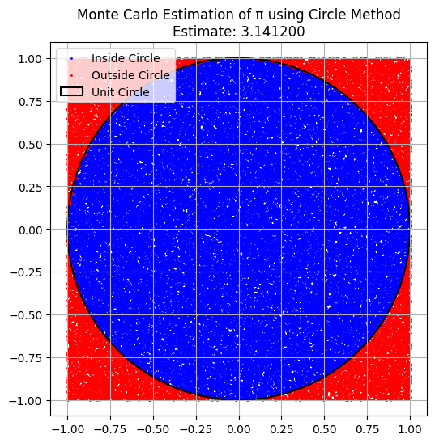
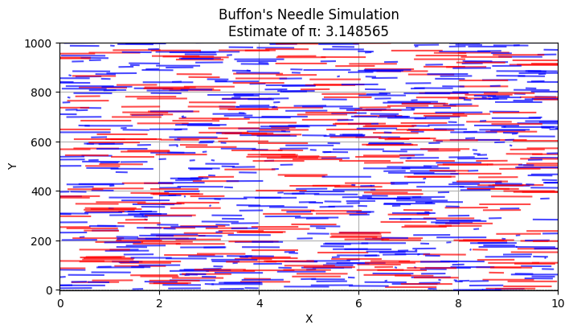

Problem 2
Estimating \(\pi\) Using Monte Carlo Methods
Part 1: Estimating \(\pi\) Using a Circle
1. Theoretical Foundation
The Monte Carlo method estimates \(\pi\) by simulating random points in a square that bounds a circle.
Consider a unit circle (radius = 1) inscribed in a square of side length 2 (from -1 to 1 on both \(x\) and \(y\) axes).
The area of the circle is:
The area of the square is:
If we randomly generate a large number of points uniformly within the square, the fraction of points that fall inside the circle should be approximately equal to the ratio of the areas:
So, we can estimate \(\pi\) as:
2. Simulation
- Randomly generate a large number of points \((x, y)\) within the square.
- Count how many points satisfy \(x^2 + y^2 \leq 1\), which means they lie within the unit circle.
- Use the ratio above to estimate \(\pi\).
3. Visualization
- Plot all points:
- Points inside the circle are marked in one color (e.g., blue).
- Points outside the circle are marked in another color (e.g., red).
- Show the boundary of the unit circle for visual comparison.
4. Analysis
- As the number of points increases, the estimate becomes more accurate.
- The convergence follows the Law of Large Numbers.
- However, the rate of convergence is slow; to get more decimal places of accuracy, a very large number of points is needed.
- Computationally, this method is simple and parallelizable, but not very efficient for high precision.
Part 2: Estimating \(\pi\) Using Buffon’s Needle
1. Theoretical Foundation
Buffon’s Needle is a probability problem where a needle of length \(l\) is dropped onto a floor with parallel lines spaced \(t\) units apart (usually \(l \leq t\)).
The probability \(P\) that the needle will cross one of the lines is:
Rearranging to solve for \(\pi\) gives the estimation formula:
Where:
- \(N\): number of needle drops
- \(C\): number of times the needle crosses a line
2. Simulation
- Simulate many random needle drops.
- For each drop, randomly choose:
- The distance from the needle’s center to the nearest line.
- The angle between the needle and the lines.
- Count how often the needle crosses a line.
- Use the formula above to estimate \(\pi\).
3. Visualization
- Draw the parallel lines on the plane.
- Show each needle's position and orientation.
- Mark crossing needles in one color.
- Mark non-crossing needles in another.
- Visual representation helps understand the geometric conditions for a crossing.
4. Analysis
- Like the circle method, the accuracy improves with more throws.
- However, this method can be less stable if there are few crossings, especially for small numbers of throws.
- The convergence is slower compared to the circle method unless optimized.
- It's a more complex simulation due to angle and geometry, but offers a unique probabilistic view of \(\pi\).
Final Comparison
| Feature | Circle Method | Buffon's Needle |
|---|---|---|
| Simplicity | Simple to implement | More complex geometry |
| Visualization | Clear and intuitive | More abstract, but interesting |
| Convergence Speed | Moderate | Slower and less stable |
| Accuracy | Good with enough points | Sensitive to rare events (crossings) |
| Use Cases | Good general purpose estimator | Great example of geometry and probability |
Conclusion
Both Monte Carlo approaches provide insightful and educational ways to estimate \(\pi\):
- The circle-based method is better for straightforward estimation and visualization.
- Buffon’s Needle is conceptually fascinating, linking randomness, geometry, and \(\pi\) in a clever way.
Despite their limitations, both methods show how randomness can solve problems in mathematics and science through simulation.

